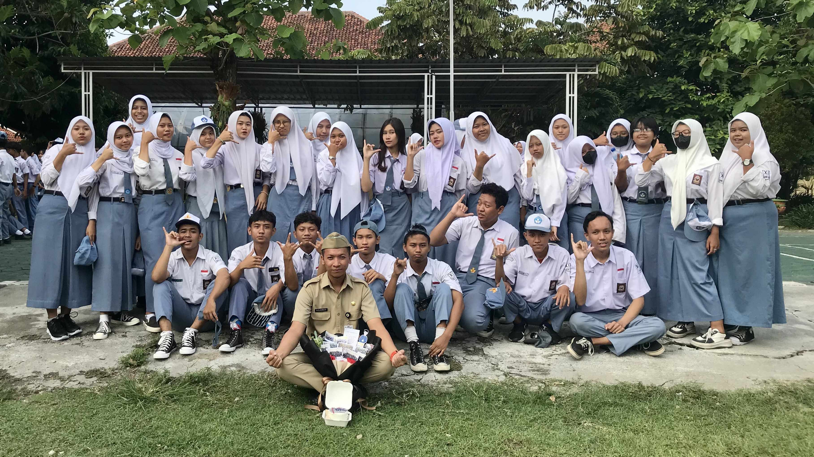
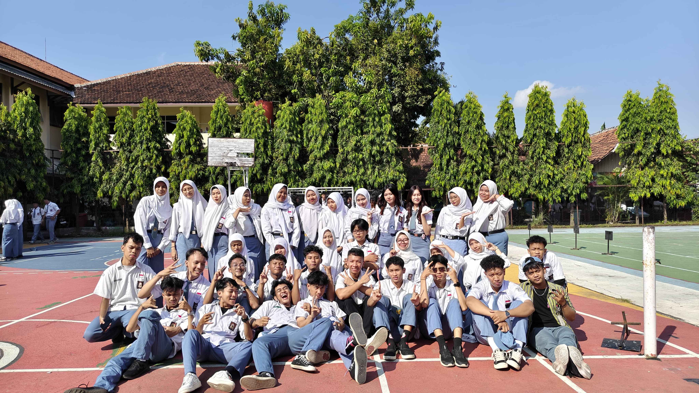

Jilid 01 / Arsip kelas / DKV 3
Dulu pengen cepat lulus.
Sekarang malah kangen.
Ya, beginilah kita.
Ada tugas yang dikerjakan tengah malam, kelas yang nggak pernah benar-benar tenang, dan tawa yang alasannya sudah lupa. Tiga tahun itu masih tersimpan di sini.


"Dulu canda tawa kita memenuhi ruang, Sekarang hanya sunyi yang merangkul kenang.”
DKV 3 / 2022—202501 / Cerita kita
Empat babak.
Satu kelas.
Dari masih saling diam sampai akhirnya tahu siapa yang paling ribut. Empat babak yang membentuk kelas ini — bukan cuma dari foto yang rapi, tapi dari hari-hari yang dulu terasa biasa.
02 / Galeri foto
Banyak bingkai,
satu kelas yang sama.
Enam belas bingkai yang paling sering kita buka lagi. Ada yang rapi, ada yang berantakan, tapi semuanya kelas yang sama. Klik satu foto buat melihat ukuran penuhnya.
Nggak ada foto yang cocok.
Coba kata kunci lain, atau balik ke semua foto.
03 / Arsip lepas
Momen random,
yang nggak masuk rapor.
Foto-foto ini datang dari tahun yang berbeda-beda dan tidak selalu punya tanggal. Justru di sini yang paling jujur: paling berisik, paling kacau, dan paling kita.
Lembar kontak
Klik satu bingkai untuk menampilkannya di atas
04 / Tebak momen
Masih ingat
momen ini?
Keterangannya disembunyikan dulu. Coba tebak ini masuk momen apa — jawabannya ada di foto itu sendiri.

BINGKAI 03Tebakan pertama
Ini masuk kegiatan apa?
Pilih satu jawaban. Jawaban dan keterangan asli muncul setelah itu.
05 / Video kenangan
Enam rekaman.
Satu kelas yang sama.
Tiga rekaman layar lebar, tiga rekaman layar tegak. Pilih satu, biarkan yang lain diam, dan jangan buru-buru menutupnya.
Pilih rekaman
Klik untuk memuat video ke pemutar di atas.
06 / Nama siswa
Tiga puluh empat nama.
Satu kelas.
Ini daftar orang-orang yang bikin tiga tahun terasa ramai. Totalnya 34 nama, dan semuanya punya cerita masing-masing.
Tiga puluh empat nama, satu kelas. Terima kasih sudah jadi bagian dari cerita ini.
Wali kelas / DKV 3
Bapak Raisal Hakim
Wali kelas DKV 3 · 2022—2025
Terima kasih sudah menemani tiga tahun ini — dari hari pertama yang masih canggung sampai hari terakhir yang berat buat ditutup.

Penutup / 08
Mungkin setelah ini kita berjalan ke arah yang berbeda.
Tidak lagi bertemu setiap pagi, tidak lagi mengeluh tentang tugas yang sama. Tapi pernah menjadi bagian dari kelas ini adalah cerita yang akan selalu punya tempat.
Kalau suatu hari kita membuka album ini lagi, semoga kita masih ingat bagaimana rasanya tertawa bersama tanpa memikirkan kapan semuanya akan berakhir.
DKV 3 · SMK Negeri 7 Surakarta
2022—2025